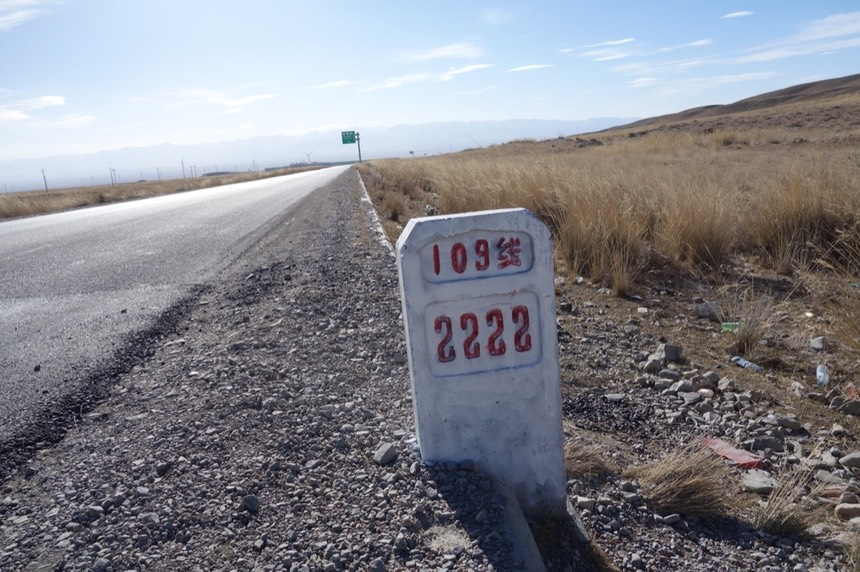
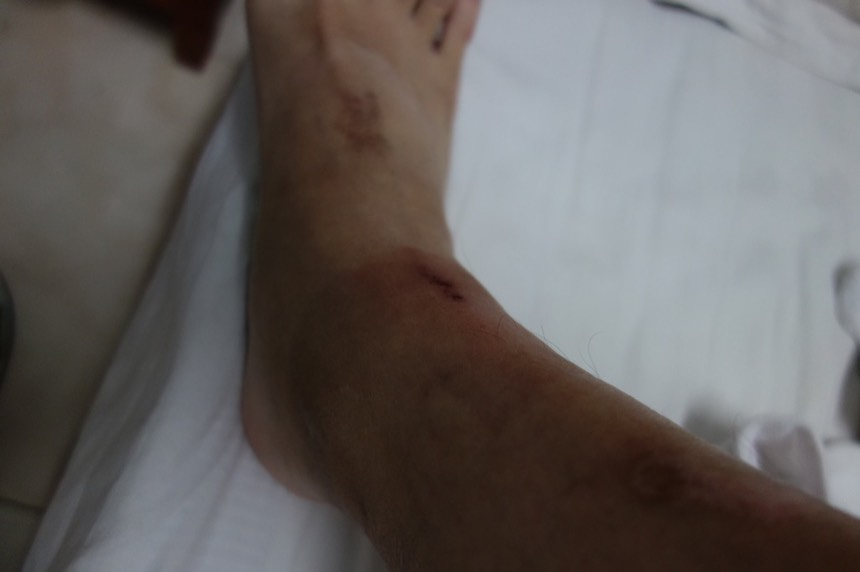

10/25 Day 5 茶卡
電熱毯實在太棒了！（我是不是昨天才說過一樣的話？），睡在有電熱毯的旅館，都會不禁如此讚歎。
雖然六點不到就醒來，但又繼續睡到七點二十才悠然再度轉醒，今天有點小賴床，大概是半夜爬起來上廁所的次數太多了。
從起床到出發，大約需要30分鐘時間整理裝備和換裝，我也不知道為什麼要這麼久？
也多虧這樣的慢條斯理，一路上沒有任何東西是忘了收拾而掉在旅館的。
照片右邊那個鐵箱子是垃圾桶，厲害的地方在於，可以直接在裡面點火，把垃圾燒掉，同時也是小型的垃圾焚化爐。
離開這個小鎮，把握時間騎往黑馬河（從西邊往青海湖景點，所遇到的第一個城鎮）
畢竟今天本來的計畫是黑馬河 〉茶卡，所以得先騎到黑馬河，才算是接上行程。
而江西溝到黑馬河就有48公里遠。快的話大概2個小時，無奈今天是屬於慢的那種。
一早先用短指手套，但清早實在好冷，看溫度計居然是負五度。
我的老天爺，趕緊換上長指的手套，難怪我的手指凍得這麼難受。
河水/湖水都是半結冰的狀態，很漂亮。看起來也能直接感受到現在所處世界的溫度，已經低於熟悉的溫暖，趕緊習慣吧。
騎車時。全身會露出來的部份除了臉之外，只剩下腳踝，而這幾天的騎乘已經把腳踝“摩”的很慘（我以為是摩擦的傷口，事實上是凍傷而不自知）
靈機一動想到可以把襪子剪破洞，就能一路往上拉到腳踝，等今天騎到目的地再來自製保護腳踝的襪子。
洗臉的時候發現毛巾上有血跡，以為是臉上什麼地方有傷口。
後來發現是左手小姆指因為太乾燥而乾裂流血，凍到也不會覺得痛，看到流血才發現，啊～原來是這裡。
每天睡覺的時候，口鼻也都很乾（沙漠的那種乾，不是口渴的那種乾），半夜要一直醒來喝水，然後還要憋著尿急。
但通常都是憋不住，整個晚上會跑2~3次廁所，戶外的廁所真的～真的很冷。每次上廁所都是大冒險。
今天一整天都是令人煩躁的逆風吹不停！看似平緩的道路，騎起來卻那麼疲憊...
遇到逆風真是完全無解，只能低著頭，耐著性子慢慢的騎，畢竟是自己在逆天，怨不得什麼。建議用聽音樂的方式來排解。
十一點多才騎到黑馬河，比預期晚，表示只剩下一個下午可以騎到茶卡（約80公里遠）
吃個炒麵當午餐，又是麵食！！好想吃炒飯呀！

物價真的貴的讓人心寒！
隨便一樣炒菜都要30起跳，60、80甚至更貴的都有，對預算無限的人，不用怕這路上吃不到豐盛的食物，只怕你吃不起而已，
而常常都能看到當地人點了一桌豐富的菜，真是令人羨慕。也對自己預算的貧弱和物價的高漲雙雙感到悲憤。
也許一天50人民幣的預算已經是神話了？
今天第一次看到單車旅行者
她停在對向車道的路邊，低著頭在看相機/手機（？）沒有發現彼此，也沒停下交談就這麼擦身而過。
看對方的球鞋是粉紅色，應該是女生，不曉得她從那裡來？要往那裡去？
吃飽後趕緊上路，沒有絲毫可以浪費的時間，真佩服腸胃，可以忍受這樣飽食完畢馬上運動也不會不舒服。
等一下要爬海拔3817的橡皮山（以現在來講算是很高，但跟4500+起跳的青藏高原相比...就不用比了）

山坡陡是意料之中，但是逆風來攪局未免太可惡！逆風的討厭、可惡、礙事對有騎車經驗的人應該不用多描述。一句“他媽的”就足以。
雖然騎車速度極慢，切換成最輕鬆的檔位慢慢往上爬，一路上都沒有下車用推的，公路車的另一個優點吧，怎麼樣陡坡都能慢慢的騎。
直到下午兩點半才氣喘噓噓的爬上頂峰，風勢之大到幾乎無法拍照，小貓號靠著柱子擺，都搖搖晃晃隨時會被吹倒。
本來想在山頂吃八寶粥當慶祝，但風實在吹的太冷就作罷，一心只想去一個風小一點的溫暖地方。

因為這邊除了是頂峰之外，其實沒有額外的什麼東西可以參觀，就只是個最高處而已（有焚香類的東西在燃燒，更顯風勢之狠勁）
下山的路很長，怕滑行時冷風會在衣服內亂竄，首度拿出了圍巾這個好東西，把脖子包起來，這樣風就灌不進去。
我跟性感女星相反，屬於穿越多，露出的部分越少，就越顯得越帥氣英挺的那一型。
一路陡坡滑行24公里，爬坡的回報就是在等這個了。

然好景不常，之後往茶卡三十幾公里路是起伏的上下坡，基本上可以視為平路。
但由於逆風攪局，這一段路騎的真是超級辛苦！

眼前所見明明是下坡或是平路，騎起來卻比上坡還要痛苦。
我覺得
在逆風中騎車
在黑夜中騎車
在雨中騎車
應該都是騎單車最怕遇到的（現在又加上了在結冰的路面騎車，之前沒遇過，沒辦法體會 =..=）
六點四十，太陽下山的前夕（差一點點又要摸黑夜騎啦～）
總算讓我以烏龜爬的速度緩緩地爬進茶卡
問路人「巴士站在哪？」居然跟我說聽不懂？明明會說中文，但是聽不懂什麼是巴士站...我以為這個地方沒有巴士站。
一路睜大眼睛騎，看著兩旁的建築，看見大陸驢友推薦能在公共澡堂洗澡的賓館（但住宿的費用已經不是網路上說的那樣平價啦～）
路快到底，要離開茶卡的最後建築，總算出現“茶卡汽車站”的牌子。
原本不是叫巴士站難怪問路都有聽沒有懂。
無奈汽車站已經關門了，也無法得知確且的車班和開往的地點。
在不知如何攔過路車輛的情況下，只好先入住茶卡，等明天一早，天亮了、汽車站也開了再說。住宿地點就是汽車站旁的明珠招待所。
當我看著拉下鐵門的汽車站發呆時，被招待所老闆給揮手召喚“住宿嗎？”
其實是個很一般的便宜招待所，跟剛才經過的相比，應該是不能比。
但價錢也便宜很多，老闆又讓我咨詢車班的情報，雖然他回答的似是而非，感覺不太有信心。
理想還是希望有直達格爾木的車，不然就要到都蘭轉車（麻煩）
而隔天驗證的時候，的確也是一半正確，一半錯誤，正確在於發車時間是早上七點多開始，錯誤在於開往的地點，並沒有直達格爾木。
烏雲超低的夜晚。
另外住宿登記的時候，每當我拿出台胞證，大致上所有老闆都會覺得很困擾（沒辦法用旅館的電腦住宿登記系統填資料）
有一半的老闆會跟我說不能住，我就會說“可以住，不用弄得這麼麻煩，我一早就離開的”，而資料就寫在紙本上，反正錢也照付。
在路上問了7∼8間餐館，有沒有蛋炒飯？居然通通沒有！（有的菜單上有，但是做不出來）
本來想點一份回鍋肉（30）跟白飯（4/碗）當晚餐
但是想到這價錢比台灣還要貴上甚多，真佩服餐廳內總有人能點上滿滿一桌的菜大快朵頤。
另外，也許我不需要再過這麼刻苦的旅行了？
要是每天都去住能洗熱水澡的旅館（今天是用臉盆在房間擦澡的第五天）
用餐時間想吃什麼，只要有胃口就不要在意價錢，喜歡吃的東西就直接點下去。
我連在商店買一包一元的麥斯威爾即溶咖啡都很掙扎，明明很想要補充咖啡的存量，卻覺得這價錢實在不合理。
掙扎了很久，最後還是沒買，明明每天早上喝熱咖啡是多麼享受的一件事。
由於沒人賣蛋炒飯，所以我就去商店買了泡麵當晚餐。
今天胃口還不錯，吃完碗麵之後，就把上次買了卻沒吃的袋麵也一併泡來吃。
上次的泡麵有蛋，這次的泡麵，打開來裡面有一根小小的熱狗腸，小驚喜。
另外八寶粥蠻好吃的，今天在路上休息時嗑掉一罐，再買一罐補充（攜帶有點重，建議今天買，明天吃，不要帶著跑）
還買了烤魷魚片當鹹的零食，有次分給藏人吃，才發現他們不怎麼吃海鮮類呢，像是螃蟹、蝦子、貝類，對方都很訝異我們會吃“這些”東西。
邊吃麵，邊來研究今天靈機一動想到的，腳踝保護襪。
把襪子（帶了四雙）用瑞士刀切掉尖端的部分，就可以無限制地往上拉到腳踝的部分。

有結痂的部分是摩擦比較嚴重的，下車走路的時候，走一步會痛一步，而整個腳踝一圈的膚色已經凍得不太一樣，偏咖啡色。
套上腳踝襪之後就變成這樣，因為是透氣襪，保護性和保暖性不是那麼高，但本來腳踝的保護是0，現在這樣已經好上很多了！
今日花費
18 午餐 炒麵
4 碗麵
4 八寶粥
10 烤魷魚片
30 住宿 雙人房 沒電毯 半夜會很冷 外面是零下的世界
-----
66
今日騎乘
騎乘時間 09：19：45
距離 128.1km
平均速度 14km
路線圖 (Google Map 連結)